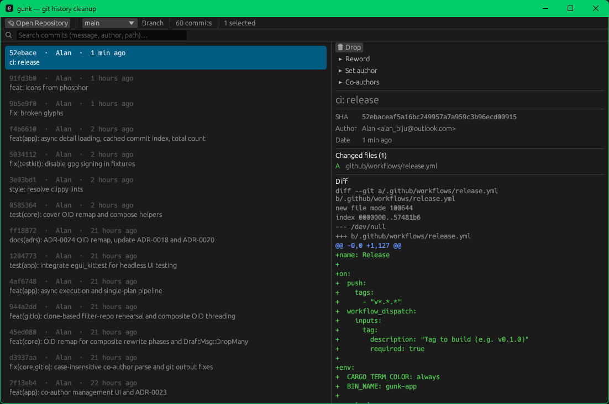

Clean up your Git history.
Without fear.
Squash commits. Flatten merges. Reword messages. Remove files from history. Reorder commits. All in draft mode — nothing touches your repo until you confirm.

What gunk does
⑂ Flatten merge commits
Turn merge commits into ordinary commits so you can squash across them. The resulting tree is byte-identical to the original merge.
⊟ Squash & fixup
Multi-select commits and squash them into one. Or fixup to discard the absorbed messages. Ctrl+click to select, then combine.
✎ Rewrite messages & authors
Edit commit messages, descriptions, and author info. Bulk-apply across multiple selected commits at once.
⤒ Reorder commits
Drag commits into the order you wish they'd been made. Safe and reversible.
✕ Remove files from history
Strip sensitive or accidental files from the entire history. Optionally append them to .gitignore.
⑂ Co-author management
Add, edit, or remove Co-authored-by trailers. Bulk-apply across multiple commits.
Built to never break your repo
Draft mode
All edits accumulate as a pending plan. Nothing touches your repo until you explicitly confirm. Review the projected history before it becomes permanent.
Rehearsal
Every mutation is rehearsed in a throwaway worktree first. If anything conflicts or fails, the real branch is untouched.
Automatic backups
A backup ref is created before every rewrite. One-click restore if you change your mind.
Push warning
If you're rewriting commits that have already been pushed, gunk warns you before applying.
How it works
- Open a Git repository and pick a branch.
- Select commits — click, Ctrl+click for multi-select, Shift for range, or search and bulk-select.
- Edit — squash, reword, flatten, reorder, remove files. All changes are drafts.
- Preview the projected history diff before applying.
- Confirm — gunk rehearses in a temporary worktree, creates a backup, then applies only if clean.
Under the hood
- No reimplemented Git. gunk shells out to your
gitbinary for reads and writes. The CLI is the single source of truth. - Pure core. All planning logic is pure, deterministic, and unit-tested. No IO, no side effects.
- Cross-platform. Native desktop app built with Rust + egui. Single binary, no runtime.
- Optional
git-filter-repofor file removal. Detected on startup; gracefully disabled if absent. - Open source under MIT. Contributions welcome.
Get started
From source
git clone https://github.com/alandavies/gunk.git
cd gunk
cargo build --releaseRequires Rust 1.85+ and Git.
Run
./target/release/gunk-appOpens the GUI. No config needed.